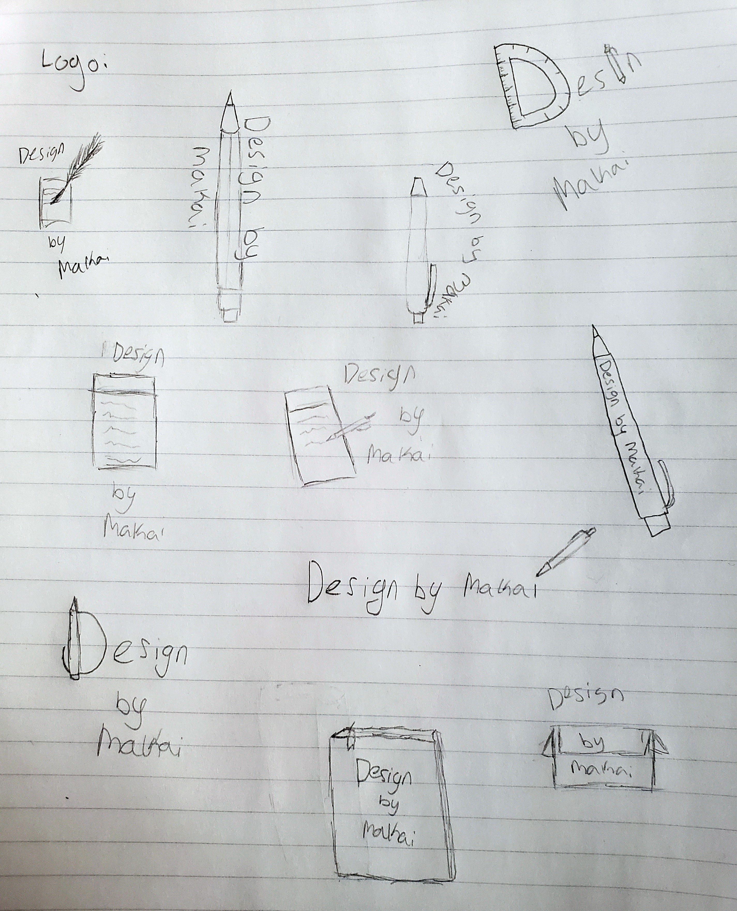

CCC

Sketches of possible logos
I wanted to design a logo for this website. To start I wanted a minimal design, something to show a
creative aspect. I had an idea of the title of the website over top of a pencil graphic. I liked this idea but I didn't want to get stuck on one idea so I went along similar paths to that. A pencil, a piece of paper with a pen writing, and drafting tools. With a few ideas I was ready to do some mock-ups.
I like the idea of a pen, sleek and symbolic. I use pens often instead of pencils, sketching like this being one of the only times I choose pencils. Pens give an idea of permanance, it can't be taken back. Bold, and grabs your attention, qualities I want to bring into the logo.
Trying to do a more old fashion pen as a quill and ink.
Aligning this older style along with a more modern pen, deciding I like the sleek look of a more modern style.
Trying a pencil instead of a pen. I like the look but I decided that pens are more permanant than pens, a more finished look in my mind.
My attempt here was to make a notebook with sketches and notes on it that is branded by the logo. Not a huge fan of how it ended up.
Moving away from the idea of a notebook, I made a quill pen writing and using the writing as a place to present the logo, I like the look but I think it can be better.
For the final cut, I created a minimalist logo. Easy on the eyes I think it makes good use of whitespace by way of centering and emphasizing the content. The pen is minimal shapes put together and is visually pleasing, there is no trouble determining what the icon is. I've learned that how you approach a task is critical. If you go in too set on one idea it leaves you without room to make creative changes and find other options. By ideating you open your mind to other options, comparing many ideas to get a wider overview of your options. Then when you are ready to iterate you have so many options to draw from, and you are able to pick parts you like from a pool of ideas to combine them in new ways. This allows for something in the end that is more authentic to yourself as you combine many of your ideas into your finished product. This is a good lesson for many aspects of life and can be as simple as "what should I make for dinner?" to other artistic descisions like drawing and sketching. Even assignments for other courses can be boiled down to a series of ideas with which you can ideate and iterate to have a full slew of ideas at your disposal.